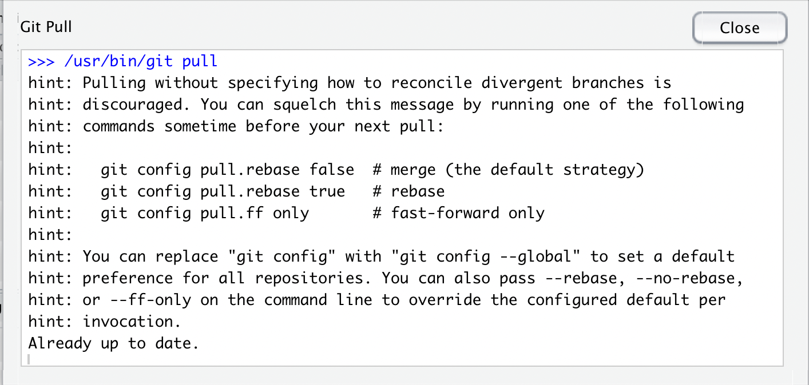
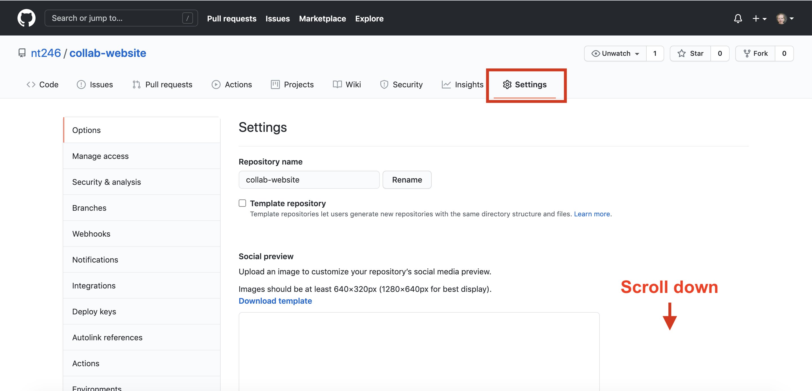
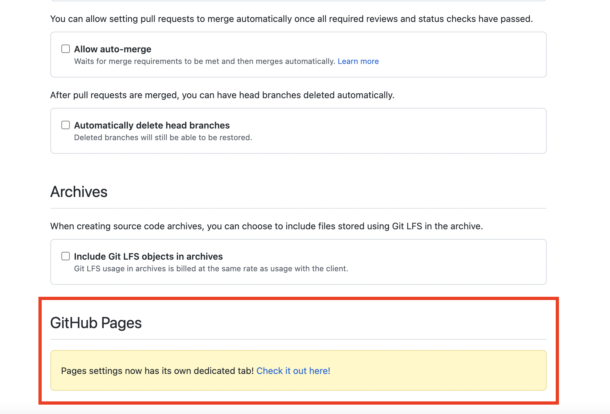
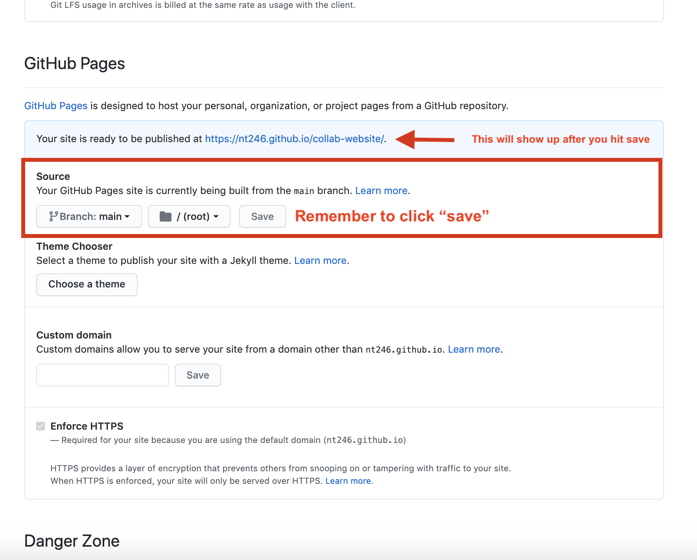
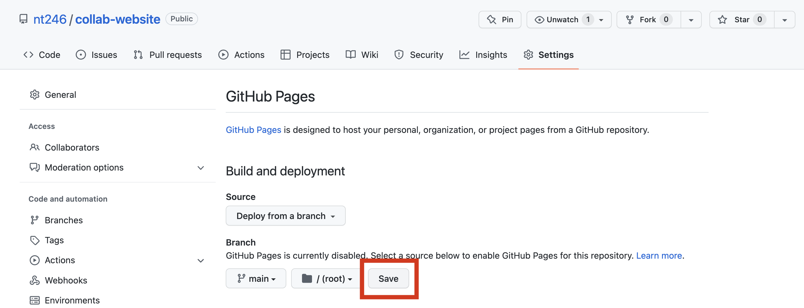
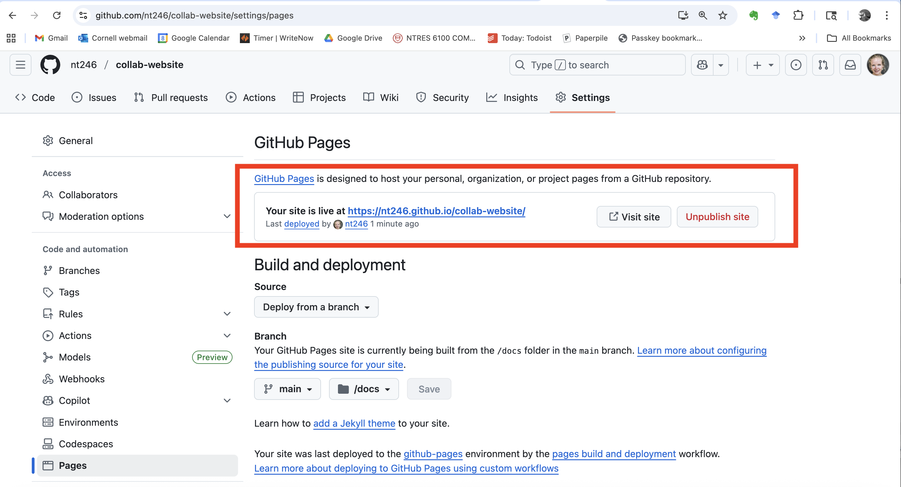

Lesson 5: Collaborating with GitHub and making websites with GitHub Pages - Part 2
Readings
There are no required readings for today, but if you did not join our lecture last Thursday, please read through the lecture notes and watch the recording posted on Canvas
Other resources
Collaborating on GitHub:
- There is a lot more detail and excellent advice in HappyGitwithR by Jenny Bryan
Tutorials on making websites with GitHub pages:
Check out the video and other tutorials directly at GitHub Pages
A good starting point is this brief tutorial by Julia Lowndes
There are also good tips in this tutorial by Karl Broman
Announcements
- Thanks for the feedback! Feel free to add additional suggestions in
the
feedbackchannel on Slack - Assignment 2 is due this Thursday - let us know if you have any questions
- Please check your grading basis on Student Center to make sure you’re happy with your enrollment status (lab section and grading basis)
- If you’re still not formally enrolled or not enrolled in the section you wish to be in, please Direct Message Nina on Slack so we can get the remaining enrollments sorted out.
- You will do assignment 3 (due Thursday Feb 16) in collaboration you get assigned today, so make sure to exchange contact info before you leave class
Plan for today
We will continue practicing how to collaborate on a GitHub repo - now while setting up a free website through GitHub Pages! Because we may not have both partners from all the pairs we formed last week with us today, we will form new pairs and start over with setting up a new shared repo that both partners will each clone to their local computers. It’s good to keep practicing that setup, and we’ll quickly get back to where we left off.
Learning objectives
Like last class, we will focus on the simplest way to collaborate on GitHub by both partners having full write access to the repo. There are many ways to improve this workflow once you get more comfortable, but this is a good place to start.
By the end of today’s class, you should be able to:
- Set up a new repo on GitHub and invite collaborators
- Clone the repo to your local machine through RStudio
- Work in parallel with a collaborator on files in a repo (both of you
pushing changes)
- Set up a free website through RStudio with GitHub pages
- Control basic aspects of the design and styling of a GitHub pages website
A recap on common issues experienced so far and how to deal with them
Problems:
- Partner 1 not pushing the
.Rprojand.gitignorefiles they create when initially cloning their repo before Partner 2 clones. In this case, Partner 2 will create these files on their computer so you will have two different copies and get merge conflicts
- Not being in the R Project you think you’re in (i.e. not pushing changes to the GitHub repo you think you’re pushing changes to)
- Committing and pushing before you have saved your most recent changes (Git will work with your most recently saved version, and not include any unsaved changes you have made in RStudio)
- Not knowing how to get non-RStudio files onto GitHub (just add them to your GitHub link folder in Finder/Windows Explorer. These are just like any other folder on your computer; they have some added functionality, but don’t need special handling)
- Getting overwhelmed by the Git error messages and feeling like the program is not letting you do any of the steps (pull, stage, commit, push). The error messages are your friend. Take a pause and read the message - it should indicate what the problem is.
Some of you may have seen this warning when you pull.

Note that this is a warning, not an error. You can silence it by
typing git config --global pull.rebase false into the
Terminal window.
More details here
Now, let’s get set up for today’s exercise
Because everyone will have a new partner today, we’ll practice one more time how to
- Create a new repo
- Invite a collaborator
When you get paired up, decide who will be Partner 1 and Partner 2.
Partner 1 starts by creating a repo. You can call it
collab-website. Add Partner 2 as a collaborator, as
described in giving
your partner privileges section from Lesson 4.
Now, both of you should clone the collaborative repo to your local machines (check Lesson 4 if you need a reminder of how to do this).
NOTE: Make sure Partner 2 doesn’t clone the repo until
Partner 1 has pushed their .RProj file to avoid merge
conflicts here.
Setting up your collaborative website
Now it’s going to get fun. Let’s start by making a super simple website. First, we’ll have Partner 2 create a new RMarkdown file. Here’s what they will do:
- Pull!
- Create a new RMarkdown file, just keep all the boilerplate text,
select the html output format and save it as
index.Rmd. Make sure it’s all lowercase, and namedindex.Rmd(it is important that you give the file exactly this name). This will be the homepage for our website! - Maybe change the title inside the Rmd, call it “Our website”
- Knit!
- Save and sync your .Rmd and your .html files
- (pull, stage, commit, push)
Next, have Partner 1 launch the website.
- Go to your new collaborative repo on Github
- Navigate to the repo settings

- In the panel on the left side, click on the
Pagesoption.

Then build your site under the Build and deployment
section. Leave the Source as the default option. Under
Branch, select main, so we source from the
main branch and root directory.

Remember to click “save” (on the same line as you chose the master branch as the source).

Your repo is now a website! After a few minutes it will go live and you can see the URL

We would also have figured out our website’s URL from your GitHub repo’s URL — pay attention to URLs.
- note that the url starts with my
username.github.io
- my github repo: https://github.com/nt246/collab-website/
- my website URL: https://nt246.github.io/collab-website/
ProTip Pay attention to URLs. An unsung skill of the modern analyst is to be able to navigate the internet by keeping an eye on patterns.
So cool!! You’ve just set up an actual website in just a few minutes!
Collaborate to build your website
- Check that your website is working. Then let’s add some more content!
- Partner 1 should pull to make sure they get a local copy of the
index.Rmdfile - Now each of you find an image online that you’d like to add (maybe a
picture of a car?). Right click on it and select “copy image address”.
The add it to the top of the
index.Rmdwith. Then knit the file. - First Partner 1 should now push their changes to GitHub (pull, stage, commit, push)
- Then Partner 2 should try to push (pull, stage, commit, push). Do you get a merge conflict? Why / why not? If you got a merge conflict, Partner 2 should resolve it and push to GitHub. Please share your screen so both of you can talk through how you want to resolve the merge conflict.
- After the merge conflict has been resolved and pushed to GitHub, Partner 1 should pull to make sure you’re both up to date
- If you have time, make additional coordinated edits, so the other Partner gets the opportunity to resolve a merge conflict as well
Jazzing up your website
Now let’s explore how we can expand our website by adding more tabs.
We do this by adding a configuration file that specifies the names of
the different tabs we want and which file we want to display on that
tab. We’ll start with simple example of a website that includes two
pages (Cars and About) and a navigation bar to switch between them. For
that, we need a configuration file _site.yml:
name: "our-website"
navbar:
title: "Our Collaborative Website"
left:
- text: "Cars"
href: index.html
- text: "About"
href: about.html
output_dir: "."Partner 2 can create this file by choosing File -> New File ->
Text File in RStudio, copy in the above text and save as
_site.yml (the leading underscore is important here).
Then we need the two .html files that are going to be
shown on the tabs. We already have index.html (our knitted
version of the boilerplate .Rmd file we have played around with).
We need to create the about.html. Partner 1 can create a
new RMarkdown (File -> New File -> R Markdown…), change its title
to “About” (this is for the title in the YAML header of the .Rmd file,
delete all the boilerplate text under the setup code chunk and write a
brief message about the two of you. Save this as about.Rmd
so we can render it into the about.html that our
configuration file refers to.
Now you can both pull, stage, commit, push and your changes should merge. Make sure you both get up to date by pulling after you have both pushed.
Now you’re ready to build your website.
From R Markdown: The Definitive Guide:
Note that the minimum requirement for any R Markdown website is that it have an index.Rmd file as well as a _site.yml file. If you execute the
rmarkdown::render_site()function from within the directory containing the website, the following will occur:
All of the .Rmd and .md files in the root website directory will be rendered into HTML. Note, however, that Markdown files beginning with _ are not rendered (this is a convention to designate files that are to be included by top level Rmd documents as child documents).
The generated HTML files and any supporting files (e.g., CSS and JavaScript) are copied into an output directory (_site by default). [Note that in our example we are asking to get our output in the top-level of the directory with
output_dir: ".", so the html files will stay there]
The HTML files are now ready to deploy as a standalone static website.
The full source code for the simple example above can be found in the hello-website folder in the repository https://github.com/rstudio/rmarkdown-website-examples.
Partner 1 can now build the website by running
rmarkdown::render_site()
Commit and push
Both Partners: Go to inspect your rendered website!
Remember the format of the URL. For example:
- my github repo: https://github.com/nt246/collab-website/
- my website url: https://nt246.github.io/collab-website/
- general website url: <https://username.github.io/repo-name
You can also always find the website by going back to “Setting”, the “Pages” (in the left-hand menu) within your GitHub repo.
Note that it may take a few minutes before your changes become active.. So don’t despair if you don’t see your changes showing up right away. Just double-check that you’ve pushed the rendered site and check back. In the meantime, you can explore your current website content and design in RStudio’s Viewer in the bottom left pane.
Make sure that the Partner who didn’t render the website locally pulls the updated version from GitHub.
Adding content and editing the website
Now, we want to add a table of contents and change the appearance of our website. We can do this by changing the configuration file. Decide who of you will make the following changes, render the website again, and push.
Update your _site.yml file to:
name: "our-website"
navbar:
title: "Our Collaborative Website"
left:
- text: "Cars"
href: index.html
- text: "About"
href: about.html
output_dir: "."
output:
html_document:
theme: cerulean
highlight: textmate
toc: true
toc_float: true Note that we have changed the output theme and added a table of
contents. Re-build the website with
rmarkdown::render_site() and push the changes to
GitHub.
Again, it will probably take a few minutes for your changes to become active on your github.io page, so just be a little patient if you don’t see anything different online right away. We can inspect our changes in RStudio’s Viewer in the bottom left pane in the meantime.
Make sure that the Partner who didn’t change the
_site.yml file pulls the updated version from GitHub.
Now play around with making additional changes to your website. You can change the theme.
The valid options to choose include default, cerulean, journal, flatly, darkly, readable, spacelab, united, cosmo, lumen, paper, sandstone, simplex, and yeti.
You can preview what each of these look like under the “themes” tab here. Discuss with your Partner which one you want to try next and who will be pushing the next edits.
You can also play around with the table of contents. For the table of
contents, you can specify what levels of headers you want include as
described here.
In our initial _site.yml file, the table of contents depth
is not explicitly specified, so it defaults to 3 (meaning that all level
1, 2, and 3 headers will be included in the table of contents). Try
adding some header levels to your index.Rmd or about.Rmd and see how the
table of contents change when you render the site and push the change to
your github.io site (the Viewer may not properly display all levels of
the table of contents, but the github.io site should).
You can also try adding another tab, either with a new .Rmd file you create or for example adding your most recent homework or another analysis file you have on hand.
If I want to add my first assignment, I’ll copy that .Rmd file into my repo and add it as a new tab in my configuration file (make sure the -text and href field are formatted exactly the same as the other tabs)
name: "our-website"
navbar:
title: "Our Collaborative Website"
left:
- text: "Cars"
href: index.html
- text: "About"
href: about.html
- text: "Answers"
href: assignment_1.html
output_dir: "."
output:
html_document:
theme: cerulean
highlight: textmate
toc: true
toc_float: true Then I re-build the website with
rmarkdown::render_site() and push the changes to
GitHub.
Your turn
Get creative! You can find some ideas for things to try in this tutorial, or you can just try things out.

Remember to coordinate with your partner. Work on different things in parallel, but keep going back and forth pushing and pulling and resolving any merge conflicts that arise.
Inspiration
Today, we’ll just explore the basics, but GitHub pages is a tremendously powerful platform for building beautiful websites with advanced graphic layout and lots of different kinds of functionality.
Here are a few examples:
Another few examples of class websites built with GitHub pages:
https://pjbartlein.github.io/REarthSysSci/index.html
https://p8105.com/index.html
And some personal websites:
https://emitanaka.org/
http://www.emilyzabor.com/
And of course the GitHub Pages site itself
Learning more
We are now at the end of the GitHub-focused section of the course. You should now be comfortable with using some of the basic functionality of Git and version control and the skills that you have learned - and that we will continue to practice through the rest of the course - may serve all your version control needs for a long time to come.
We have focused on the simplest way to start using GitHub here. Once you really integrate GitHub into your workflow, you may want to learn about more advanced options or special use scenarios. Here, Google is going to be your best friend. You may want to learn about topics like:
- Forking vs. cloning a repo
- Branches
- Pull requests
- How to “check out” older versions of your repo
- GitHub Projects
- Using Issues on GitHub
One important thing to note is that we have exclusively interacted with Git through RStudio because that provides a really nice interface and integrates well with RMarkdown and other work in R. However, there are some limits to the functionality, so for more advanced usage you will probably have to either use the GitHub Desktop program or interact with Git and GitHub through the command line.
A few good resources for learning about interacting with Git through the command line are:
Have fun exploring!